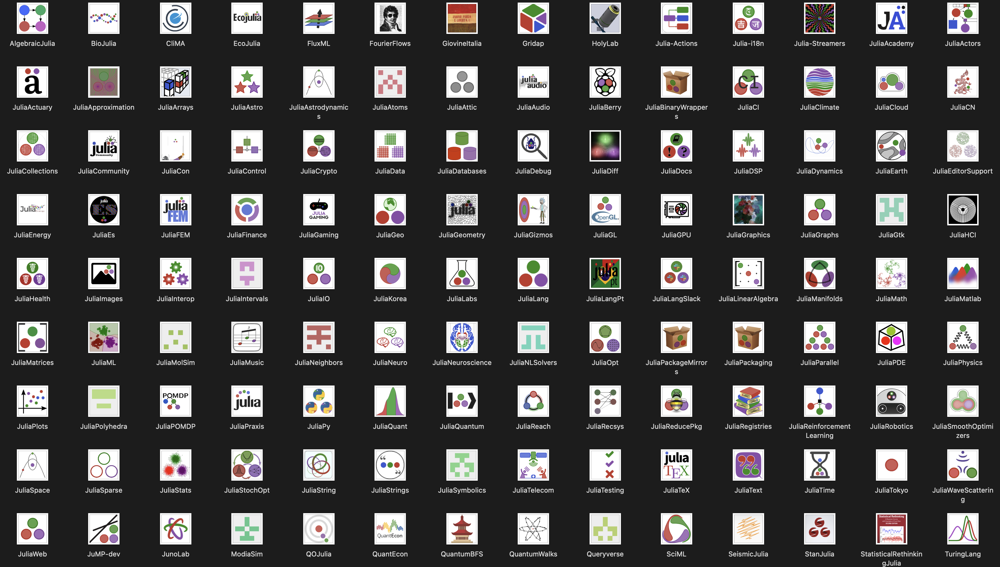

Please take a moment to read the Julia Community Standards. We expect that your participation in any Julia related forum, online or offline, respects these standards. The Julia Community is committed to continuing to foster an inclusive and diverse culture. Read more about how we are doing this on our diversity page.
We use GitHub for the development of Julia itself. There, we host our source code, track issues, and accept pull requests. For support and questions, please use Discourse.
The primary online discussion venue for Julia is the Discourse forum. Learn more about our Discourse site and what it is best used for here.
For casual conversation and quick, informal questions, we have an official Julia Slack. As an open source alternative to Slack and home to some Julia sub-communities, we also have Zulip.
All the JuliaCon videos and other videos of general interest in the community are uploaded to the Julia Language YouTube channel.
On Twitter, tweet with the #julialang hashtag and check out the Official Julia Language Twitter account for Julia updates.
The Julia Community has a shared calendar for all upcoming global events. If you are an event organizer, please email us with the details so it can be added to the calendar. The Julia community also has local meetups around the world.
We conduct the Julia User & Developer Survey right before JuliaCon every year and present the findings at JuliaCon. The survey has now been conducted two years in a row:
Julia’s official documentation is in English, but many groups work to translate and localize the documentation along with other resources. Currently, the active localization effort's are: JuliaCN (Chinese) and JuliaEs (Spanish). See past localization efforts.
The Julia Language is proud to have fostered a diverse assortment of GitHub Organizations over the years. Find out more about our Ecosystem's GitHub Orgs.
